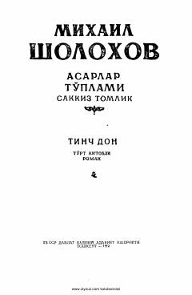

TDDon kazaklarining fuqarolar urushi davridagi murakkab taqdiri va qo'zg'oloni haqidagi tarixiy roman.
Mixail Sholoxovning ushbu mashhur romanining uchinchi qismida 1919-yil bahorida Don viloyatining shimoliy qismida yuz bergan kazaklar qo'zg'oloni tasvirlanadi. Asar fuqarolar urushi davridagi murakkab ijtimoiy-siyosiy vaziyat va insoniy taqdirlar dramasi orqali tarixiy voqealarni yoritib beradi.